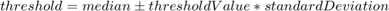
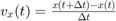
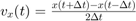
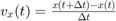
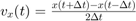
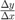

Specifications for Core ReVAS Functions
Contents
Video Trimming Module
Purpose
Trim the video's upper and right edges.
Method
Crop each frame of the video.
Input arguments
- Full path to the video.
- A parameters structure specifying all necessary parameters for video trimming. Fields: borderTrimAmount, the number of rows/columns to be removed from the upper/right edges in pixels (assumed to be 24 pixels if not provided); overwrite, determines whether an existing output file should be overwritten and replaced if it already exists.
Output arguments
None.
Notes
- Produces a trimmed version of this video that is stored in the same location as the original video but with '_dwt' appended to the original file name.
Find Stimulus Location Module
Purpose
Records in a mat file the location of the stimulus in each frame of the video. Also calculates mean and standard deviation of each frame.
Method
Cross-correlation of stimulus with a each frame of the video.
Input arguments
- Full path to the video.
- Full path to the reference frame image OR a parameters structure that describes the size and thickness of a standard cross--must-have fields: size, in units of pixels, describing the length/width of the square dimensions of the cross (must be an odd natural number); thickness, in units of pixels, describing the number of pixels in the width of the bars of the cross (must be an odd natural number).
- A parameters structure specifying all necessary parameters for strip analysis. Fields: overwrite, determines whether an existing output file should be overwritten and replaced if it already exists; a enableVerbosity flag to display progress in real-time;
Output arguments
None.
Notes
- Produces a mat file that is stored in the same location as the original video but with '_stimlocs' appended to the original file name. Variables saved include: stimulusLocationInEachFrame, a 2D array containing horizontal and vertical positions of the stimulus in each frame; stimulusSize, a two element array representing the size of the stimulus; meanOfEachFrame, containing the mean of each frame; standardDeviationOfEachFrame, containing the standard deviation of each frame.
Remove Stimulus Module
Purpose
Remove stimulus from each frame of the video.
Method
Removes stimulus from each frame, according to the stimuli positions given by FindStimulusLocations. Fills the space with noise of similar mean and standard deviation as the rest of the frame.
Input arguments
- Full path to the video.
- A parameters structure specifying all necessary parameters for strip analysis. Fields: overwrite, determines whether an existing output file should be overwritten and replaced if it already exists.
Output arguments
None.
Notes
- Produces a version of this video with the stimulus removed that is stored in the same location as the original video but with '_nostim' appended to the original file name.
Detect Blink Frames Module
Purpose
Records in a mat file a list of video frame numbers for which a blink occurred.
Method
Detection of frames with exceptional differences in mean and/or standard deviation.
Input arguments
- Full path to the video.
- A parameters structure specifying all necessary parameters for strip analysis. Fields: overwrite, determines whether an existing output file should be overwritten and replaced if it already exists; thresholdValue, tolerance threshold that dictates cutoff for what movements are considered blinks, according to .
Output arguments
None.
Notes
- Produces a mat file that is stored in the same location as the original video but with '_blinkframes' appended to the original file name. Variables saved include: badFrames, a 1D array of the frame numbers for which a blink occurred.
Gamma Correction Module
Purpose
Apply gamma correction to each frame of the video.
Method
Uses Matlab's built-in imadjust to map the intensities of the input video to the output video.
Input arguments
- Full path to the video.
- A parameters structure specifying all necessary parameters for strip analysis. Fields: overwrite, determines whether an existing output file should be overwritten and replaced if it already exists; gammaExponent, the curve representing the intensity mapping from the original video to the output video, values less than 1 result in brighter outputs, values greater than 1 result in darker outputs.
Output arguments
None.
Notes
- Produces a gamma-corrected version of this video that is stored in the same location as the original video but with '_gamscaled' appended to the original file name.
Bandpass Filtering Module
Purpose
Apply bandpass filtering to each frame of the video.
Method
Smoothing, high-pass filtering, and normalization.
Input arguments
- Full path to the video.
- A parameters structure specifying all necessary parameters for strip analysis. Fields: overwrite, determines whether an existing output file should be overwritten and replaced if it already exists; smoothing, used to remove high-frequency noise in the frames, represents the standard deviation of a Gaussian kernel, in pixels (default 1); lowSpatialFrequencyCutoff, used to remove low-frequency fluctuations in the frames which messes up strip analysis, for instance, brightness gradients due to the way observer's head is positioned in the TSLO, or just the darker nature of the foveal pit compared to the peripheral retina creates these low-freq. fluctuations (default 3 cycles/image).
Output arguments
None.
Notes
- Produces a bandpass-filtered version of this video that is stored in the same location as the original video but with '_bandfilt' appended to the original file name.
Make Coarse Montage Module
Purpose
Create a retinal montage by using whole frames.
Method
First read and shrink all frames by scalingFactor to increase speed. Choose an arbitrary frame as a temporary reference frame (if no frame number is specified, the function chooses the frame at the middle of the video). Perform built-in normxcorr2 on all frames with respect to the temporary reference frame. Multiply those positions by the reciprocal of scalingFactor to get rough estimates of the up-to-scale frame movements. Then layer the frames on top of each other with corrections for those frame movements, and take the average for a coarse reference frame.
Input arguments
- The file name of the video
- A parameters structure specifying all necessary parameters for generating the coarse reference frame. Fields: scalingFactor, used to scale down each frame when performing cross-correlations refFrameNumber, determines which frame number of the video will be used as a temporary reference frame. Optional parameter enableGPU, option to use GPU in performing computations if the computer has a GPU. enableGPU is a boolean. overwrite, option to overwrite file names that already exist. Also a boolean. verbosity, has values 0, 1, or 2. Value of 0 will only save the output to a .mat file. Value of 1 will save the result and display the result. Value of 2 will save the result, display the result, and show the progress of the cross-correlations.
Output arguments
- coarseRefFrame, a 2D array.
% Notes
- The function saves coarseRefFrame to a file with the extension '_coarseref.mat'
- The function saves the scaled-up frame shifts to 'framePositions.mat'
Make Fine Montage Module
Purpose
Create a retinal montage by using horizontal strips.
Method
First perform strip analysis on the coarse reference frame to get a better estimate of eye movements. Use those improved estimates to generate a refined reference frame in MakeMontage. For a specified number of iterations, repeat this process.
Input arguments
- The coarse reference frame, as a 2D array.
- The file name of the video.
- A parameters structure that contains the following fields: All fields required for stripAnalysis stripHeight, which will provide information for the interpolation in MakeMontage newStripHeight, an optional parameter that is set to stripHeight if no value is specified. Since stripAnalysis takes strips that are evenly spaced, there are significant gaps between them. MakeMontage interpolates positions between those spaced strips so that there are strips of height newStripHeight immediately adjacent to each other from the top to the bottom of the frame. time, the time array from stripAnalysis. Also provides information for the interpolation in MakeMontage positions, the eyePositionTraces from stripAnalysis. Used to correct for the movement of the eye in generating the reference frame.
Output arguments
- refinedFrame, a 2D array.
% Notes
- MakeMontage, a helper function for FineRef, will save the final reference frame with the file name of the video with the extension '_refframe.mat'
- stripAnalysis will also save the final eyePositionTraces and time array in a file with the extension '_hz_final.mat'
Strip Analysis Module
Purpose
Extract eye movements in units of pixels.
Method
Cross-correlation of horizontal strips with a pre-defined reference frame.
Input arguments
- Full path to the video or video as a 3D. (Note that if there are color channels, the program should convert it to grayscale before further processing).
- Full path to the reference frame image OR the reference frame itself as a 2D.
- A parameters structure specifying all necessary parameters for strip analysis. Fields: overwrite, determines whether an existing output file should be overwritten and replaced if it already exists; a enableVerbosity flag to display progress in real-time; stripHeight in units of pixels; stripWidth in units of pixels; output samplingRate, used to compute number of strips per frame; enableGaussianFiltering, boolean flag, set to true to use Gaussian Filtering as method to determine useful peaks; gaussianStandardDeviation, standard deviation used if Gaussian Filtering enabled; maximumPeakRatio, maximum ratio between maximum peak and second maximum peak required in order for a peak to be considered useful if Gaussian Filtering disabled, a measure of confidence for the estimated location of each strip; minimumPeakThreshold, minimum peak value required in order for a peak to be considered useful if Gaussian Filtering disabled; adaptiveSearch, boolean flag to enable/disable confined/adaptive search for cross-correlation peak; adaptiveSearchScalingFactor, number of times to temporarily scale-down video frames to perform preliminary position estimates if adaptive search enabled; searchWindowHeight, size of search window if adapative search enabled; enableSubpixelInterpolation, boolean flag to enable/disable interpolation, a sub-structure where subpixel interpolation parameters (neighborhoodSize and subpixelDepth) will be stored; axesHandles axes handles to be used to display progress if verbosity is enabled. use an empty array to have verbosity displayed in separate figure windows.
Output arguments
- Raw eye position traces (horizontal and vertical) in units of pixels.
- Useful eye position traces (horizontal and vertical) in units of pixels. The difference between the raw and useful positions is as follows. When the peak ratio in a cross-correlation map of a certain strip is below the threshold specificied by the user, the corresponding eye position samples will be replaced by NaN in the useful eye position traces but they will be kept as is in the raw eye position traces. This is an important feature for, let's say, the user entered an optimistically high peak-ratio threshold but the video turned out to be of bad quality and more-than-expected number of samples were thrown away as unuseful. The user in this case can use the output of this function to retrospectively change the peak-ratio threshold and re-create useful eye position traces by using the raw traces and the peak-ratio for each strip stored in a structure (see below).
- Corresponding time array in seconds (always starts at 0).
- A structure where all stats regarding the analysis are kept. These stats include peak ratio, peak value, and search window for each and every strip, and an array of error structures which keep information about the runtime errors (caught by try/ catch statements) at certain strips. (Sometimes, the image quality is not good enough to get a nice cross-correlation map where the peak is well-defined. If the peak ratio is below the threshold specificed by the parameters structure, this strip will be skipped and the corresponding eye position sample in time will be NaN.) This structure can be used later to retrospectively inspect the quality of the analysis, say, if the user did not enable verbosity while running this module but later on was interested in looking at how the analysis went.
Notes
- This function will use normxcorr2 function available in MATLAB for computing the cross-correlation maps. Since this function uses either frequency domain or time domain computation depending on the size of the arrays, it offers a good adaptive compromise.
- normxcorr2 does not automatically do the computations in GPU. To do so, the strip and the reference frame must be transferred to GPU memory by using gpuArray function, also available in MATLAB. When computations are done in GPU, the output variables must be transferred back to the PC memory by using gather function. In this module, the cross-correlation map need not be transferred but the peak locations and the peak value should be transferred to properly store them in the third output argument described above.
- 2D interpolation option can be implemented as a separate function since it may be needed in other modules of ReVAS. The specifications for this helper function is very straightforward. Input arguments: 2D correlation map, pixel coordinates of the peak location (e.g., x0 and y0), and a parameters structure which contains at least two fields (an odd-numbered neigborhood size, typically 7, and subpixel depth, typically 50). Output arguments: interpolated pixel coordinates (e.g., x1 and y1) and an error structure caught by try/ catch. If there no error has occured, this argument will simply be an empty array. As the interpolation method, use spline option in interp2.
Filtering Module
Purpose
TODO
Method
TODO
Input arguments
- TODO
Output arguments
- TODO
Notes
- TODO
Re-Referencing Module
Purpose
Scale the eyePositionTraces of a video relative to the entire retina
Method
ReReference finds the location of a local reference frame (the final reference frame of a video) on a larger reference frame, which more accurately reflects the entire retina. The position of the local reference frame relative to the global reference frame is then added to all the eyePositionTraces for that local reference frame. Doing so yields eyePositionTraces that reflect the movement of the eye as a whole.
Input arguments
- globalRef, an image of the entire retina
- filename, the output of stripAnalysis (has the '_hz_final.mat' extension)
- A parameters structure specifying all necessary parameters for re-referencing. Fields: referenceFrame, for now. The local reference frame
Output arguments
- eyePositionTraces_reRef, the updated eyePositionTraces
- params, the parameters that were passed into the function
- referenceFrame, the local reference frame that was passed into the function
- timeArray, the timeArray that was passed into the function
- globalRef, the global reference frame that was passed into the function
Notes
- The function saves all the output arguments to a file with the extension '_reref.mat'
Saccade Detection Module
Purpose
Records in a mat file an array of structures representing saccades and an array of structures representing drifts.
Method
Detection of frames with exceptional differences in velocity.
Input arguments
- Full path to the video.
- Original video size in pixels.
- Original video size in degrees.
- A parameters structure specifying all necessary parameters for strip analysis. Fields: overwrite, determines whether an existing output file should be overwritten and replaced if it already exists; a enableVerbosity flag to display progress in real-time; stitchCriteria, used to lump together microsaccades that are less than this value apart in milliseconds; minAmplitude, cutoff to determine which saccades are great enough in amplitude to count; maxDuration, cutoff to determine which saccades are too long in duration to count (in milliseconds); detectionMethod, set to 1 to use hard velocity thresholds or set to 2 to use median-based thresholds; hardVelocityThreshold, fixed velocity threshold to use if using hard velocity threshold detection method; hardSecondaryVelocityThreshold, fixed secondary velocity threshold used to capture entire peak for those identified by hard velocity threshold if using hard velocity threshold detection method; thresholdValue, tolerance threshold that dictates cutoff for what velocitiy differences are considered saccades if using median-based detection method according to
 ; secondaryThresholdValue, used to capture entire peak for those identified by the thresholdValue if using median-based detection method; velocityMethod, formula used to calculate differences in velocity, set to 1 to use , set to 2 to use .
; secondaryThresholdValue, used to capture entire peak for those identified by the thresholdValue if using median-based detection method; velocityMethod, formula used to calculate differences in velocity, set to 1 to use , set to 2 to use .
Output arguments
None.
Notes
- Produces a mat file that is stored in the same location as the original video but with '_sacsdrifts' appended to the original file name. Variables saved include: saccadeStructs and driftStructs, each as 1D arrays of structs. Each struct has fields: onsetTime, time stamp of the start of event; offsetTime, time stamp of end of event; xStart, x position at start of event; xEnd, x position at end of event; yStart, y position at start of event; yEnd, y position at end of event; duration, time between onset and offset time; amplitude.x, absolute difference between x start and x end; amplitude.y, absolute difference between y start and y end; amplitude.vector, the pythagorean theorem applied to x amplitude and y amplitude; direction, the application of Matlab's atand2d to , (gives range [-180, 180] degrees); position.x, excerpt of eye traces containing x positions; position.y, excerpt of eye traces containing y positions; time, excerpt of time array containing times; velocity.x, excerpt of x velocities; velocity.y, excerpt of y velocities; meanVelocity.x, mean of x velocities; meanVelocity.y, mean of y velocities; peakVelocity.x, highest of the x velocities; peakVelocity.y, highest of the y velocities; acceleration.x, excerpt of x accelerations; acceleration.y, excerpt of y accelerations.